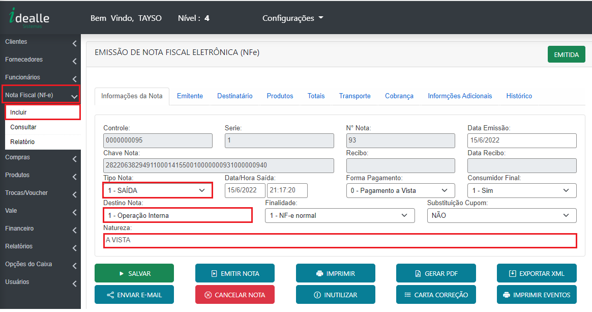
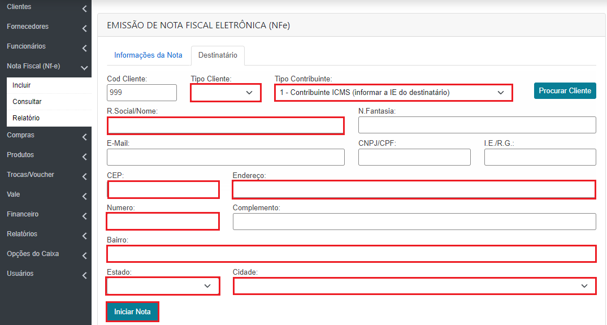
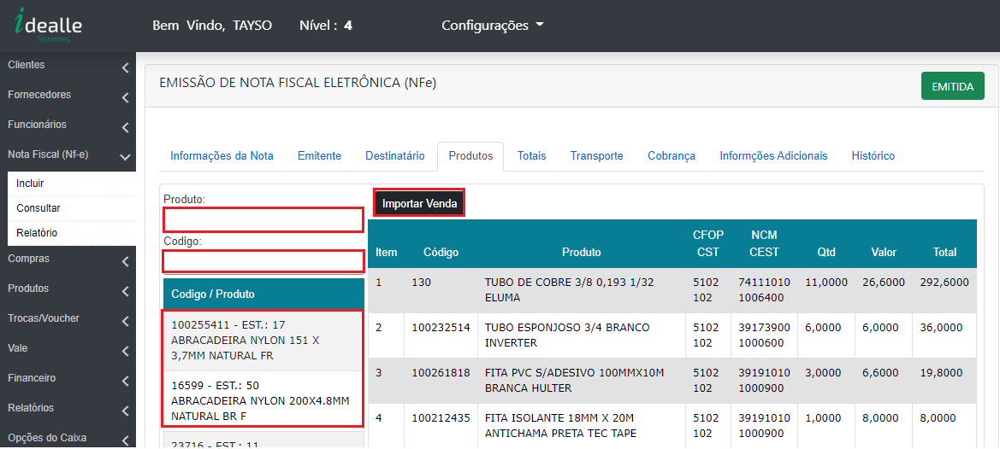
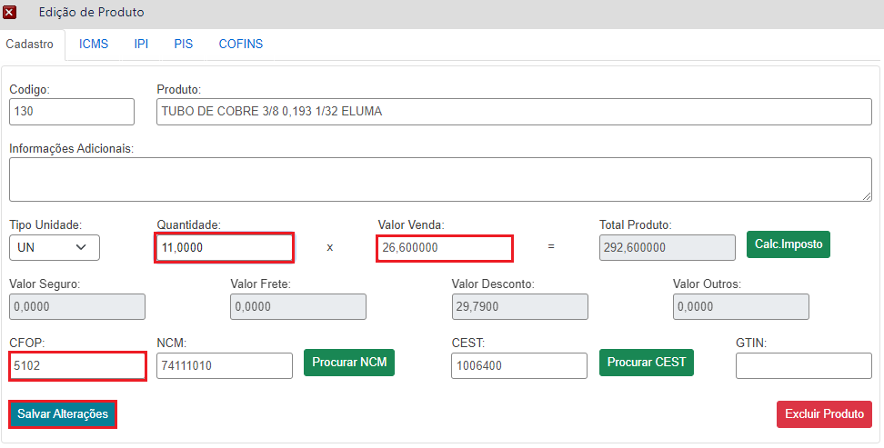
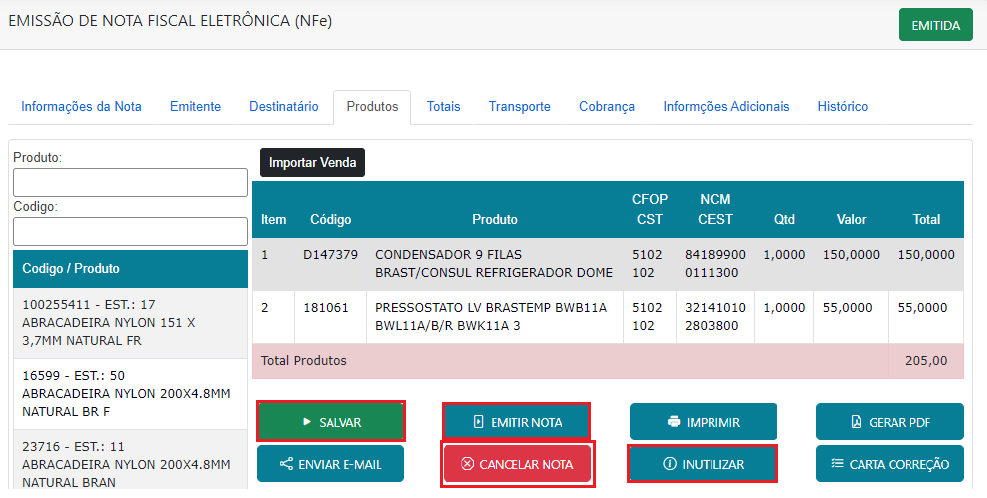

Informações da Nota
Na parte lateral esquerda vai clicar no botão “Nota Fiscal (NFe) > Incluir ”, em seguida vai inserir as seguintes informações:
Tipo Nota: O tipo SAÍDA vai ser utilizado sempre que tiver como o intuito subtrair o produto do estoque e ENTRADA sempre que tiver como intuito acrescentar no estoque.
Forma de Pagamento: Pagamento a vista quando for nota de saída, sem pagamento quando for para nota de entrada ou devolução.
Consumidor Final: Sim para pessoas física (CPF), não para pessoa jurídica (CNPJ).
Destino nota: Operação Interna para cliente dentro do estado, Operação Interestadual para cliente fora do estado.
Finalidade: “NFe normal” para notas de venda ou nota de entrada, “ NF Devolução” para notas de devolução.
Substituição Cupom: Sim se caso a venda já tenha sido realizada no caixa e emitido cupom ou venda vermelha. Não se a nota estiver sendo criada.
Natureza: Especificar a operação da nota, informando se ela é "Venda", "Devolução de compra", "Devolução de venda".
 Destinatário
Campos obrigatório para preenchimento no formulário de cadastro para a emissão de nota será:
Tipo de Cliente: (Pessoa Física ou Pessoa Jurídica),
Tipo de contribuinte: “Contribuinte ICMS, pessoa Jurídica (Informar Inscrição Estadual no campo ao lado do CNPJ), "Não contribuinte" pessoa física(Não preencher o campo de Inscrição Estadual).
Razão Social:Nome da empressa ou pessoa.
CNPJ/CPF Informar o CNPJ ou CPF
Endereço Informar CEP, Endereço, Numero, Bairro, Bairro, Estado e Cidade.
Em seguida clicar no botão de “Iniciar Nota”.
 Produtos
Para inserção dos produtos, basta pesquisar o produto desejado no campo de “Produto ou Código”, em seguida vai clicar no produto desejado, onde será aberto uma janela para colocar a quantia a ser vendida, o valor e CFOP de operação. Nessa tela também tem a opção de “Importar Venda”, nela você pode realizar a importação de produtos de vendas que já foram realizadas através do caixa.
 Inclusão de Produtos
Após selecionar o produto será exibida essa janela para ser inserida a “quantidade, Valor de venda, CFOP” após ter essas informações clicar em incluir. Será feito esse procedimento para os demais produtos, caso a nota seja composta por mais de um.
 Emissão de Nota
Depois de todos os produtos inseridos só será necessário clicar no botão SALVAR, para que as informações sejam salvas, em seguida no botão EMITIR NOTA. Na imagem abaixo eu deixei em destaque mais dois botões que o botão CANCELAR NOTA e INUILIZAR NOTA. O botão de cancelar nota, como a descrição já diz vai ser utilizado quando necessário cancelar a nota, esse cancelamento só é permitido se realizado em até 24 horas. Após esse período será necessário realizar uma Nota de Devolução. Já o botão inutilizar é utilizado quando a nota é gerada e precisa ser cancelada antes mesmo da emissão.
